VPAモデル診断スクリプト
濵邉昂平・市野川桃子
2022-09-15
Diagnostics-for-VPA.Rmd2021年度変更点
- 残差プロット
- 残差プロットのスムージング曲線がデフォルトで表記されません
- 観測誤差と自己相関係数が図中に出力されます
- 残差プロットの背景に観測誤差に基づく信頼区間が表記されます
-
注意事項
- 以下のような計算法の資源には対応していません
- 最高齢や+グループが時系列で変化する資源
- 直近年の加入尾数を、過去の平均で計算している資源
- 直近年の加入尾数にRPS等を乗じている資源
- etc…
- 上述のような資源担当の方は別途お問い合わせください
- その場合、関数の修正 or VPAの再実行等でご対応頂きます
- 以下のような計算法の資源には対応していません
VPAモデル診断用スクリプト
- VPAのモデル診断を網羅的に実施できる関数と、使用例のスクリプトを配布します
- 基本的には「チューニングあり」VPAが対象ですが、「感度分析」と「レトロスペクティブ解析」はチューニングなしVPAでも実施できまするので、実施してください
0. 事前準備
- frasyrやggplot2などをインストールして呼び出しておいてください
※ tidyr, dplyr, purrr, ggplot2, stringerの5つは“tidyverse”というパッケージの中にまとめてあるのでlibrary(tidyverse)だけでも大丈夫です
1. 感度分析(チューニングあり・なし）
- 資源評価モデルにおけるさまざまな仮定の変化が、推定資源量などにどのような影響を与えるか確認するために実施するものです
- 理想的には再生産関係・管理基準値・将来予測などへの影響も見たほうが良いですが、どこまでやるかは難しいところです
- 全ての項目を実施頂く必要はありません
- あくまで効きそうな仮定、その資源で問題となっているパラメータについて実施してください
- 感度分析の対象：
- 生物パラメータ各種（自然死亡係数、年齢別体重、成熟率など）
- α (プラスグループとプラスグループ-1歳のFの比)
- 最終年のFの仮定
- チューニングなしの場合: 最終年のF＝過去数年のFと同じと仮定しているか
- チューニングありの場合：全F推定かsel.updateか
- 近年の資源量推定に関わる重要な部分については、別途資源評価票で別途議論してください（たとえば近年の体重の変化が問題になっており、その値を変えたときのABCへの影響を調べたいなど）
感度分析はdo_sensitivity_vpa関数を使えばできます。 引数で重要なものは、VPA計算の結果（vpa関数の実行結果のオブジェクト）、感度分析を行いたい指標what_replace、感度分析の値valueの3つです。また、結果のグラフについての引数はwhat_plotとncolがあります。出力数を減らしたい場合はwhat_plotに出力したい結果だけ入力してください。ncolはグラフの列数です。適宜調整してください。
結果では、$resultにVPAの結果がリスト形式で、$graphに複数のVPAの結果を重ね書きしたグラフが入っています。
関数の引数について（特にvalueに与えるデータの型について）、不明点等ありましたら、以下のようにhelpを使って確認してみてください。
help(do_sensitivity_vpa)生物パラメータ各種
自然死亡係数
what_replace="M"にすると自然死亡係数について感度分析を行えます。valueには、感度分析を行いたい割合をnumeric型で入れてください。（以下の例では、もとの自然死亡係数を0.5倍、1.5倍、2倍にした感度分析結果を返す）
res_vpa_sensitivity <- do_sensitivity_vpa(res_vpa_estb,
what_replace = "M",
value = c(0.5, 1.5, 2))-
$resultの中にはvpa計算の結果 -
$graphの中には結果の図 がそれぞれ、入っています。
今回の例では、valueを3通り仮定したので、それぞれの結果がリスト型式で以下のように入っております。
names(res_vpa_sensitivity$result)[1] "Sensitivity M= x0.5" "Sensitivity M= x1.5" "Sensitivity M= x2"
res_vpa_sensitivity$graph
自然死亡係数を大きくすると、資源量のスケールも併せて大きくなっています。
直接Mの行列を入力しても実行できます。 最近年のMの仮定について見たい、掛け算ではなく足し算で実行したい、等の場合は行列を与えてください
年齢別体重
年齢別体重を置き換える場合は、what_replace = "waa"とします。 自然死亡係数の場合と同様に、valueに入れた値がもとの年齢別体重にかけられます。
また、what_plotに作図で出力したい結果を指定することができます。
この他、plot_yearに作図したい年（x軸の範囲）を指定することもできます
res_vpa_sensitivity <- do_sensitivity_vpa(res_vpa_estb,
what_replace = "waa",
value = c(0.8, 1.2),
what_plot=c("SSB","biomass","U","Recruitment",
"fish_number","fishing_mortality"),
plot_year = c(1997, 2000),
ncol=3
)
res_vpa_sensitivity$graph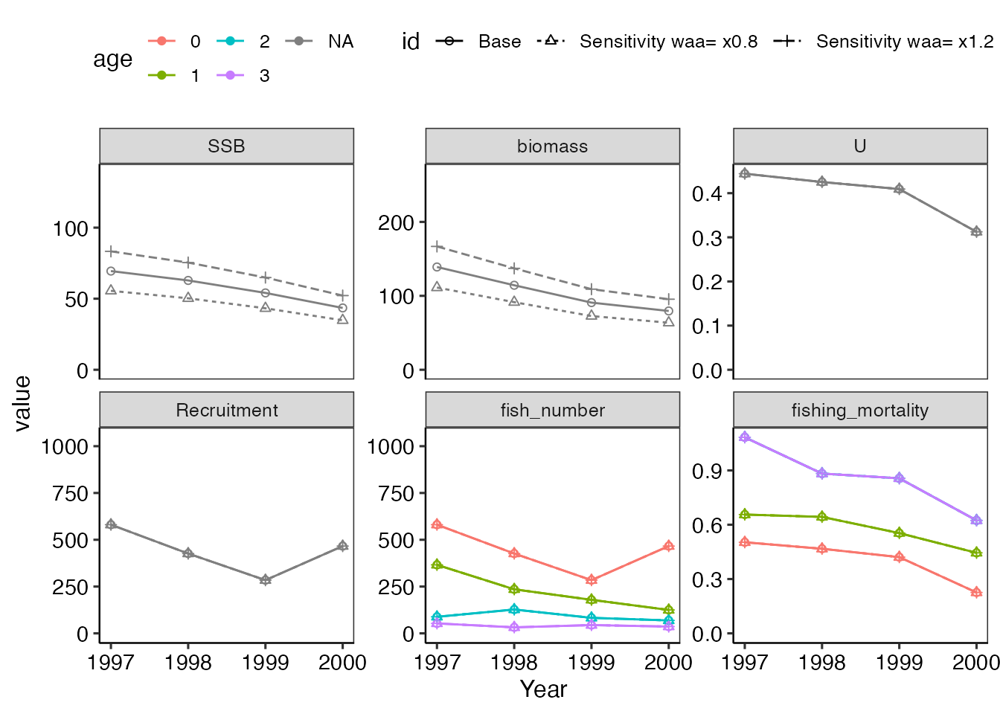
また、解析に用いたwaaと同じ長さのmatrixであれば、listにまとめてvalueに任意の値を与えることができます。
res_vpa_sensitivity <- do_sensitivity_vpa(res_vpa_estb,
what_replace = "waa",
value = list(matrix(rep(1:4,10),nrow = 4),
matrix(rep(c(1,2,4,8),10),nrow = 4)
),
what_plot=c("SSB","biomass","U","Recruitment",
"fish_number","fishing_mortality"),
ncol=3
)
res_vpa_sensitivity$graph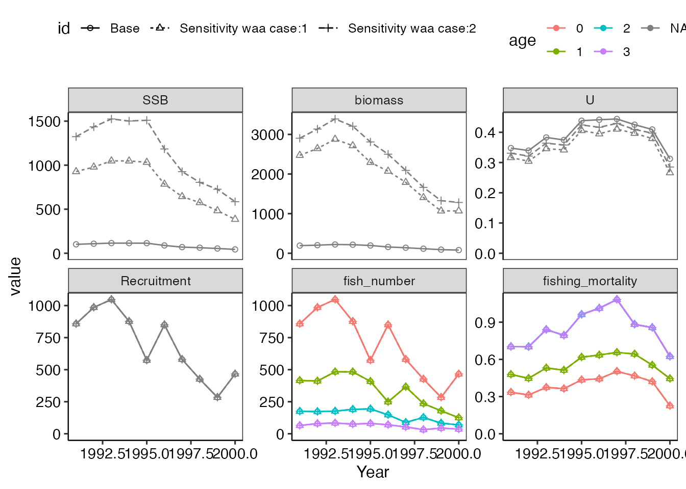
漁獲物中の年齢別体重
漁獲量計算と資源量計算で異なる年齢別体重を用いている場合には、漁獲物中の年齢別体重の設定についても感度分析ができます。この場合は、what_replace = "waa.catch"とします。 valueに入れる値の型はindex = waaの場合と同じく、numericまたはlist型です。 （この例の場合には、漁獲量用の年齢別体重が設定されていないため、エラーとなります。）
res_vpa_sensitivity <- do_sensitivity_vpa(res_vpa_estb,
what_replace = "waa.catch",
value = c(0.8, 1.2),
what_plot=c("SSB","biomass","U","Recruitment",
"fish_number","fishing_mortality"),
ncol=3)成熟率
成熟率を置き換える場合は、what_replace = "maa"とします。 年齢別体重の場合と同様valueには、listに格納した行列を与えてください。
res_vpa_sensitivity <- do_sensitivity_vpa(res_vpa_estb,
what_replace = "maa",
value = list(matrix(rep(seq(0,1,length=4),10),nrow = 4),
matrix(rep(c(0,0,.5,1),10),nrow = 4)
),
what_plot=c("SSB","biomass","U","Recruitment",
"fish_number","fishing_mortality"),
ncol=3
)
res_vpa_sensitivity$graph
α
αを置き換えたい場合は、what_replace = "alpha"とします。 valueには直接仮定したい値を入れてください。
res_vpa_sensitivity <- do_sensitivity_vpa(res_vpa_estb,
what_replace = "alpha",
value = c(0.9,0.8),
what_plot=c("SSB","biomass","U","Recruitment",
"fish_number","fishing_mortality"),
ncol=3
)[1] "Warning! The estimated F for the older ages may not be accurate if C<<N is not satisfied for the older ages."
[1] "Warning! The estimated F for the older ages may not be accurate if C<<N is not satisfied for the older ages."
res_vpa_sensitivity$graph
チューニング方法について
チューニングの有無で行える感度分析が大きく変わります。
- チューニングなしVPA(
tune=FALSEで解析している) :tf.yearについて感度分析を行います - チューニングVPA(
tune=TRUEで解析している)- 選択率更新法(
sel.update=TRUE) : 選択率更新法の代わりに全F推定法を行います - 全F推定法(
term.f="all") : 全F推定の代わりに選択率更新法を行います
- 選択率更新法(
チューニングなしVPAの場合
チューニングなしVPAの場合、最終年のFが過去何年分の平均になるかという仮定の部分の値を変えて感度分析を行います。
# チューニングなしVPAの場合
res_tmp <- vpa(vpadat_estb, tf.year=1996:1999, last.catch.zero = FALSE,
Pope = TRUE, p.init = 0.8, tune=FALSE)
tmp <- do_sensitivity_vpa(res_tmp,what_replace = "tuning", value = list(1995:1999, 1998:1999))
# 2つの数列をlist型にしてvalueを与えています選択率更新法の場合
今回の例では選択率更新法で推定されているため、全F推定で感度分析が行われます。 これまでと同様に、what_replace = "tuning"といれれば大丈夫です。 選択率更新法の代わりに感度分析で全F推定を行う場合、valueに値を入れる必要はありません
res_tmp <- vpa(vpadat_estb, tf.year=1998:2000, last.catch.zero = FALSE,
Pope = TRUE, p.init = 0.5, tune=TRUE, sel.update=TRUE)
res_vpa_sensitivity <- do_sensitivity_vpa(res_tmp,
what_replace = "tuning",
what_plot=c("SSB","biomass","U","Recruitment",
"fish_number","fishing_mortality"),
ncol=3
)
res_vpa_sensitivity$graph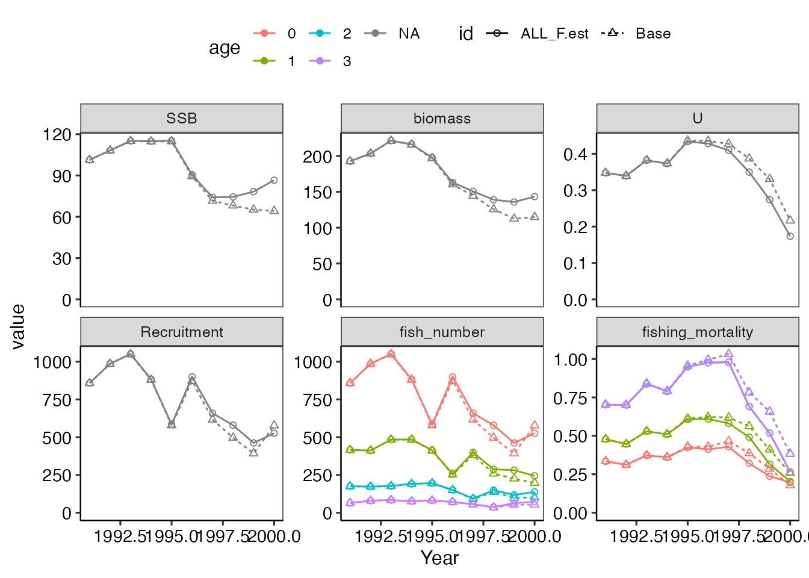
全F推定の場合
全F推定の場合は、代わりに選択率更新法で感度分析が行われます。 また先のチューニングなしVPAのように、最終年Fの仮定についても値を変えて、感度分析することができます。
# 全F推定法の場合
res_tmp <- vpa(vpadat_estb, tf.year=1997:1999, last.catch.zero = FALSE,
Pope = TRUE, p.init = 0.5, tune=TRUE, sel.update=FALSE, term.F = "all")
tmp <- do_sensitivity_vpa(res_tmp, what_replace = "tuning", value = list(1995:2000))
# 数列をlist型にしてvalueを与えています
# チューニングなしVPAと同じですリッジペナルティλについて
全F推定でリッジVPAを行っている場合（λ＞0）にはλの値についての感度分析も実施してみてください。
# リッジVPAの場合
res_tmp <- vpa(vpadat_estb, tf.year=1997:1999, last.catch.zero = FALSE,
Pope = TRUE, p.init = 0.5, tune=TRUE, term.F = "all", lambda = 0.2)
tmp <- do_sensitivity_vpa(res_tmp, what_replace = "lambda", value = c(0,0.1,0.5,0.7),
what_plot=c("SSB","biomass","U","Recruitment",
"fish_number","fishing_mortality"),
ncol=3)
# lambdaの値を"numeric型"で与えています
# list型ではないので気を付けてくださいb (hyperstability/depletion)
bを推定した場合、bを推定しない(b=1)場合について、感度分析を実施してください。what_replace = "b"とするとbについて感度分析できます。また、bを推定していない場合も適宜bを推定（あるいは固定）してみて、感度分析を行ってみてください。
- bの値を与えたい場合、
numeric型、またはlist型（複数与えたい場合）で値を入れる（ベースケースでbを推定しているが、bを推定しない感度分析を実施する場合はvalue=1を与える） - bを推定したい場合、
"b.est"と入れる
# b推定しているが、bを固定する場合
tmp <- do_sensitivity_vpa(res_vpa_estb, what_replace = "b", value = list(c(1,1),c(1.2,1.2)))
# bを固定しているが、bを推定する場合
tmp <- do_sensitivity_vpa(res_vpa_estb, what_replace = "b", value = c("b.est"))2. レトロスペクティブ解析
- 過去～7年分くらいのデータを削除して資源計算をしなおした場合に、資源量やFの推定値が傾向を持って変化するようなレトロスペクティブパターンが見られるかどうかを調べます。その際には
- 非線形パラメータbを推定しなおすかどうか
- リッジの場合、λを推定しなおすかどうか という問題がありますが、デフォルトは、これらのパラメータは固定（最終年で推定されたものを用いる）して計算してみます。
-
vpa(rec)でrec引数を指定していも利用可能です - ただし、指定している
rec.yearより遡ると、効果が消えます
レトロスペクティブ解析はdo_retrospective_vpa関数を用いることで、
- 結果の出力
- Mohn’s rhoの出力
- bの再推定結果の値
- 作図
までを一貫して行えます。
引数として、
-
res: vpa計算の結果のオブジェクトの他に -
n_retro: レトロスペクティブ解析を何年さかのぼって実行するか（デフォルトで5年） -
b_reest: b(hyperstability/depletion)をレトロスペクティブ解析内で再推定するか -
what_plot: 作図で何を出力するか plot_year: 作図したい年（作図のx軸の範囲）-
ncol: 作図の列数
があります。
今回の解析結果res_vpa_estbを使って、7年分をさかのぼってレトロスペクティブ解析する場合、以下のようにコードします。
res_vpa_retrospective <- do_retrospective_vpa(res_vpa_estb,
n_retro = 7,
b_reest = FALSE)
res_vpa_retrospective$mohn_rho N B SSB R F
-1.353966e-01 -1.019165e-01 -9.331421e-02 -1.829777e-01 1.626003e+05 結果はlist型式でまとめてあり、$を使って呼び出すことが可能です。resultはVPAの推定結果、mohn_rhoはmorhのrhoの値、graphはグラフ、b_resはbの再推定結果です。またMohn’s rhoは、グラフ中にも併記してあります。 ここで、漁獲係数のMohn’s rhoは年齢別漁獲係数を全て足し合わせた値となっています。
res_vpa_retrospective$graphレトロスペクティブ解析中でbの再推定を行う場合
また、bをレトロスペクティブ解析内で再推定したい場合は以下のようにコードしてください。
res_tmp <- vpa(vpadat_estb, tf.year=1997:1999, last.catch.zero = FALSE, Pope = TRUE,
p.init = 0.5, tune=TRUE, sel.update=FALSE, term.F = "all", b.est = TRUE)
# まずbを推定するvpaを実行しています
res_vpa_retrospective <- do_retrospective_vpa(res_tmp,
n_retro = 4,
b_reest = TRUE # ここをTRUEにしてください!!
)
res_vpa_retrospective$b_res
[38;5;246m# A tibble: 6 × 4
[39m
`2000` `1999` `1998` `1997`
[3m
[38;5;246m<dbl>
[39m
[23m
[3m
[38;5;246m<dbl>
[39m
[23m
[3m
[38;5;246m<dbl>
[39m
[23m
[3m
[38;5;246m<dbl>
[39m
[23m
[38;5;250m1
[39m 1.11 1.04 0.792 0.603
[38;5;250m2
[39m 0.564 0.736 0.826 0.612
[38;5;250m3
[39m 0.854 0.679 0.356 0.257
[38;5;250m4
[39m 0.578 0.523 0.603 0.383
[38;5;250m5
[39m 0.657 0.892 0.628 0.480
[38;5;250m6
[39m 1.14 1.33 1.47 1.11 このように各レトロスペクティブ解析ごとに、bを推定していることが確認できました。（ダミーデータなので変な値となっています）
2段階法の場合
VPAを2段階法で行っている場合は、res_step1引数に1段階目のVPA結果のオブジェクトを与えてください。
res_tmp1 <- vpa(vpadat_estb, tf.year=1997:1999, last.catch.zero = FALSE, Pope = TRUE,
p.init = 0.5, tune=FALSE, term.F = "max", b.est = FALSE,fc.year=1998:2000)
res_tmp2 <- vpa(vpadat_estb, tf.year=1997:1999, last.catch.zero = FALSE, Pope = TRUE,
p.init = 0.5, tune=TRUE, term.F = "max", b.est = TRUE, fc.year=1998:2000,
sel.f = res_tmp1$saa$`2000`) # sel.fで2段階目の選択率の初期値を与えます
res_vpa_retrospective <- do_retrospective_vpa(res_tmp2,
n_retro = 3,
plot_year = c(1995, 2000),
b_reest = TRUE,
res_step1 = res_tmp1
# ここに1段階目のチューニングなしVPAを与えてください
)
res_vpa_retrospective$graph
3. パラメータの収束の確認 (jitter analysis)
Fの推定結果が初期値に依存せずに、安定した結果となっているかを診断するために、jitter analysis（初期値を乱数で生成し、vpa計算を繰り返し実施する）をおこないます。vpa関数では推定パラメータの初期値は引数p.initで与えられますが、全F推定法の場合、最終年の各年齢のFの初期値になります。
Fの結果が初期値に依存する場合、初期値に応じて推定結果も変わることが考えられます。このような場合、パラメータの初期値への依存が高く、局所的な最適解に引っ張られている可能性などが考えられます。すなわち、データの持つ情報量が低いことが考えられるため注意が必要です。jitter analysisはこのようなことがおこっていないか確認するための解析です。
初期値は対数を取った0.001から2の間を10刻みにした後、指数を取ってます。刻みの数はn_iteで指定できます。
do_estcheck_vpa関数で、自動的にjitter analysisとその結果の作図が行われます。
基本的に、vpa計算の結果のオブジェクトのみを与えれば計算が行われます。 その他に引数として、
-
what_plot: 作図したい年齢 -
TMB: TMBで解析する（ 始めて実行する場合はuse_rvpa_tmb()を先に実行 ）
を指定します。コマンドは以下の通りです。
res_vpa_jitter <- do_estcheck_vpa(res_vpa_estb, n_ite=10)Maximum likelihood in jitter analysis is: 23.60018
Likelihood with estimated parameters is: 23.60018 最初に引数で与えたVPA結果について、
- ヘッセ行列の対角成分が正であるか
- パラメータの推定結果が収束してるか
を知らせてくれます。ヘッセ行列の対角成分に負がある（本来正になる値であり、パラメータ推定が失敗してる）、あるいは収束していない場合、ここで関数が止まります。 再度、VPA関数を使って解析してください。（初期値を変える、全F推定の場合パラメータを減らす、資源量指数の非線形性を考慮している場合はbを与えるあるいは1にする、などの工夫が必要となります）
次に、関数内でjitter analysisが行われます。n_ite数分のVPA計算を行います。 生成する初期値の数は 10個(n_ite = 10) で十分です。推定値と初期値の大体の関係が見れれば問題ありませんが、初期値に応じて、Fが異なる値で推定される（大きな値に発散せずに）場合には注意が必要です。 その結果がres_vpa_jitter内にあり、それぞれ、
-
$initial_valueに初期値 -
$p_name推定したパラメータ（漁獲係数）の年齢 -
$value推定値や尤度、収束の値を返す -
$graph初期値と推定値or尤度の関係の図
が入っています。
res_vpa_jitter$graph$estimated # 推定されたF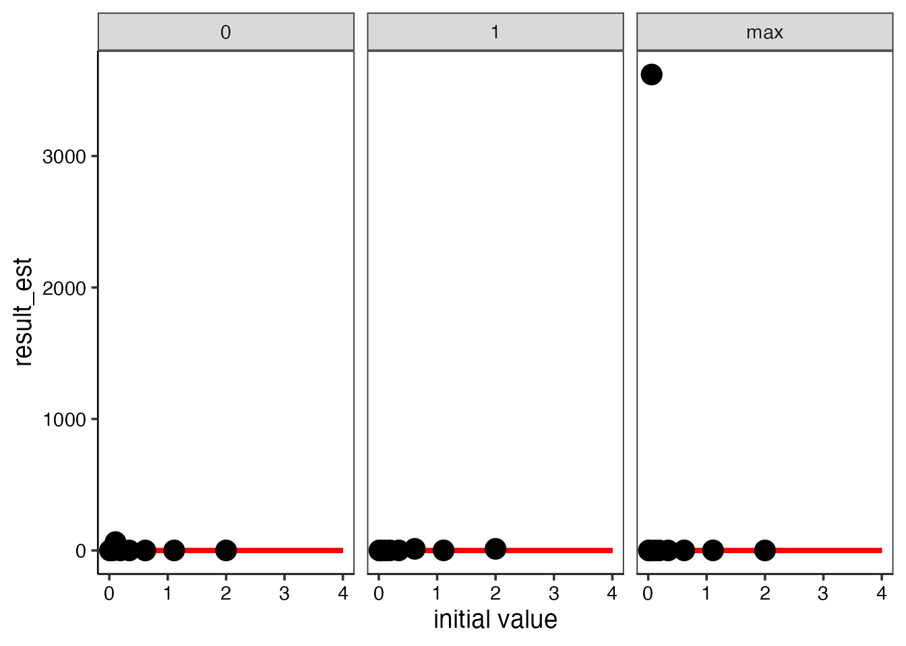
res_vpa_jitter$graph$likelihood # 対数尤度（大きいほど良い）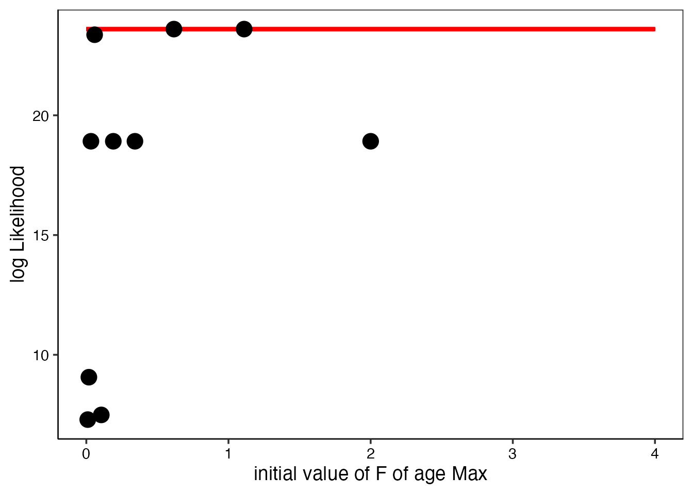
ここで赤い横線は与えた結果の推定値と尤度を表しています。
結果の図を見ると、いくつかの初期値のセットではFが0におちたり、Fが高い値になってしまっていることがわかります。これらのときの尤度は、推定値が得られたときの対数尤度（赤線）よりも小さい値になっていることから、推定パラメータから計算される尤度はほかの初期値を与えたときの推定値から得られる尤度と比較しても最大になっている(=最尤推定値が得られている)ことが確かめられました。
またVPAは、最終年のFでしか指標値とのフィットをコントロールできないことから、FがInfなどの大きな値になることもあります。このような場合に、推定結果の最大対数尤度より、Fが発散した場合の最大対数尤度の方が大きくなることがあります。これはFが収束していないだけですので、こういった場合は推定と初期値の関係に問題ありません。 （逆にこういったFが大きく発散しないFを探すという方が実際の資源に適用する場合には多いかと思います）
関数を実施したとき、“Maximum likelihood in jitter analysis is: , Likelihood with estimated parameters is :” という表示が出ますので、上下の値が一致している、または上の値よりも下の値のほうが大きければOKです。逆に、上の値（Maximum likelihood in jitter analysis）のほうが大きい場合には、上述のようにFが発散しているため問題ないか、最尤推定値は他にある可能性がある場合の2通り考えられます。後者の場合は初期値を変えて計算しなおしてください。
4. 残差プロット
残差プロットはモデル診断の中でも、最も重要なパートの1つです。残差とは、CPUEとその予測値(qN^b)の差のことを指し、これが小さいほうがよりフィッティングの良いモデルとなります。残差の対数（対数残差）プロットは0を平均とした分布になります。また、 残差プロットが時系列的に一貫して増える（または減る）傾向（自己相関）がみられる場合、モデルとデータの間に何らかの齟齬がある可能性があり、注意が必要です。この他、 他の残差に比べて著しく大きい残差は、そのデータ（CPUE）が外れ値である場合があります。外れ値はパラメータ推定に大きな影響を及ぼすので、外れ値と思われるデータを解析に含めるか再考する必要があります。 ただし、いずれも時系列データを扱っていると往々に起こりうることですので、外れ値がある、あるいは自己相関係数が有意であっても、結果が妥当そうであれば問題ありません。 残差プロットを行うことでこれらの傾向を一目にして把握することができます。
残差プロットはplot_residual_vpa関数で実行できます。大きく3種類のプロットを書くことができます。
-
$year_resid: 対数残差を時系列にプロットしたもの。先述の残差の傾向と外れ値の把握に利用。標準化残差のプロットについては$year_sd_resid中にある。 -
$fitting_Index: CPUEと予測CPUEをそれぞれ重ねてプロットしたもの。データと推定結果のフィッティングを見るもの。 -
$abund_Index: 資源量/資源重量/親魚重量とその予測CPUEとの関係。赤い線が推定した資源量とその指数の線形/非線形性を表す。
またindex_name引数中に、各指標の名前を与えるとプロットに反映されます（ない場合はIndex01、Index02・・・となります）。与える場合、用いた指標の数分引数に入れてください。
plot_example <- plot_residual_vpa(res_vpa_estb, index_name = c("CPUE1", "CPUE2","CPUE3","CPUE4","CPUE5","CPUE6"),plot_smooth=TRUE)
plot_example$year_resid
plot_example$abund_Index
また、plot_year引数でプロットしたい年を指定することも可能です。
plot_example <- plot_residual_vpa(res_vpa_estb, plot_year = 1995:2000)
plot_example$fitting_Index
これらの残差プロットは今回のバージョンから、vpa関数実行時に引数plot = Tにすると自動生成されるようになっています。モデル診断の最も基本パートとなるので、是非活用ください。
2021年度変更点
先程の図の通り、残差プロットに信頼区間が明記されるようになりました。 信頼区間は濃い色が80%、薄い色が95%のそれぞれ信頼区間となっております。
これによって、外れ値の検出ができます。 特に、最近年に外れ値がある場合、その値が資源量推定結果に与える影響は大きいことが想定されるので、後述のジャックナイフ法などを通して結果の妥当性を評価してください。
plot_example$year_resid
もし信頼区間の影が邪魔で消したい場合は、resid_CI=FALSEとしてください。
plot_residual_vpa(res_vpa_estb,
index_name = c("CPUE1", "CPUE2","CPUE3",
"CPUE4","CPUE5","CPUE6"),
plot_smooth=TRUE,
resid_CI = FALSE)$year_resid
また、自己相関係数も明記されるようになりました。 もしこの自己相関係数が有意に大きいあるいは小さい場合、rho=0.6*のように、*印が付きます。 この場合は、残差の独立の仮定が満たされていません。
ただし、満たされていないから、一概にモデルとしての妥当性が不十分で、棄却されるというわけではありません。（主観的で恐縮ですが）
ジャックナイフ法によるデータの影響力の検証等を通して、結果の妥当性が確認されれば、問題がないと考えます。
こういった妥当性の検証のプロセスを説明することが大切だと考えます。
5. ジャックナイフ法
観測値（資源量指数）を1つずつ抜いて解析を行うことで、影響力の強いデータや外れ値を検出する方法です。 do_jackknife_vpa関数で自動で観測値を抜いて再解析を行います。
plot_yearに作図したい年（x軸の範囲）を指定することもできますscale_valueに任意の値を与えることで、プロットの点の形を任意で指定できます（ベースモデル＋ジャックナイフの数分与えてください）=> ジャックナイフ法の他に、感度分析、レトロスペクティブ解析でも指定できます
引数methodはデフォルトで“index”となっており、資源量指数の種類ごとに取り除いて解析を行います（つまり、資源量指数の種類分、結果が返ってきます）。一方、それぞれの種類を年ごとに取り除きたい場合は“all”を選択してください。この場合、資源量指数の種類×年数分、取り除いて計算するためデータ数によっては多くの計算時間を必要とする点に気を付けてください。
res_vpa_jackknife <- do_jackknife_vpa(res_vpa_estb,
what_plot = c("SSB", "biomass", "U", "Recruitment",
"fish_number", "fishing_mortality"),
ncol = 3, plot_year = c(1995, 2000),
scale_value = 2:8)
res_vpa_jackknife$JKplot_vpa # 全体の結果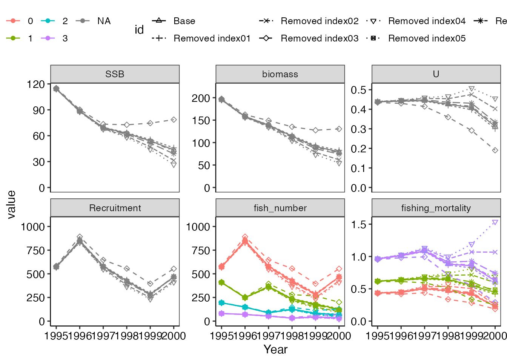
res_vpa_jackknife$JKplot_par + ylim(0,1) # 最終年のFの比較 (ここではylimで縦軸を調整しています)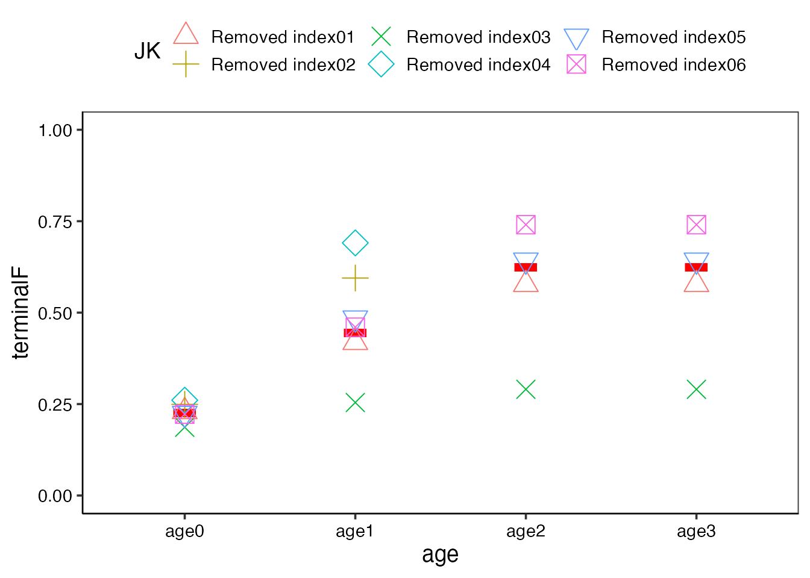
6. ブートストラップによる信頼区間推定
ブートストラップ法は乱数でデータを再生成し、信頼区間等を推定する方法です。 ここでは
- CPUEについて乱数生成する方法
- 年齢別漁獲尾数について乱数生成する方法
それぞれについて、新規関数とともに紹介します。 またパッケージの更新速度の都合上、ブートストラップ標本数は10個としていますが、95%信頼区間などを正確に計算したい場合は1000回（デフォルト）ほど必要です。 ただし、データの特性や推定されたsigmaの大きさにも依存するので、200回や500回でも、1000回と信頼区間がそれほど変わらない場合は、少なくても構いません。
一方で大まかな幅や各パラメータの相関関係だけを知りたい場合には、100回ほどでも問題ありません。
ブートストラップ法ではVPA計算を繰り返し行うことから時間がかかるので、TMBの仕様を推奨します。最初にvpa計算する時にTMB=Tにしておくと、以下のブートストラップ計算もTMBで行われます。
1. CPUEのブートストラップ法について
先述の通り、ブートストラップ法はデータをリサンプリングする方法ですが、VPAでは残差をリサンプリングすることで、データ（CPUE）を再生成します。 frasyrの中にはブートストラップ法を自動で行うboo.vpa関数がありますが、今回作成したplot_resboot_vpa関数内でもboo.vpa関数を使っています。したがって、plot_resboot_vpa関数に直接vpa計算結果のオブジェクトを入れてください。
-
引数
B_methodでブートストラップ法の方法を変えることができます。基本はパラメトリックブートストラップで問題ありません。ノンパラメトリックブートストラップ法では残差を重複ありでランダムにデータに足し合わせて再生成します。一方、パラメトリックブートストラップは平均0、分散が残差の分散となるような正規分布から乱数でデータを生成して、それぞれ解析する方法です。-
"p": パラメトリックブートストラップ法（デフォルト） -
"n": ノンパラメトリックブートストラップ法 -
"r": 残差のスムージング後にBootstrap-t法を行う方法。
-
引数
ci_rangeで信頼区間の値を指定できます。デフォルトは0.95です（95％信頼区間の表記）。
res_vpa_bootstrap <- plot_resboot_vpa(res_vpa_estb, B_ite = 10)[1] 1
[1] 2
[1] 3
[1] 4
[1] 5
[1] 6
[1] 7
[1] 8
[1] 9
[1] 10
res_vpa_bootstrap$plot_ssb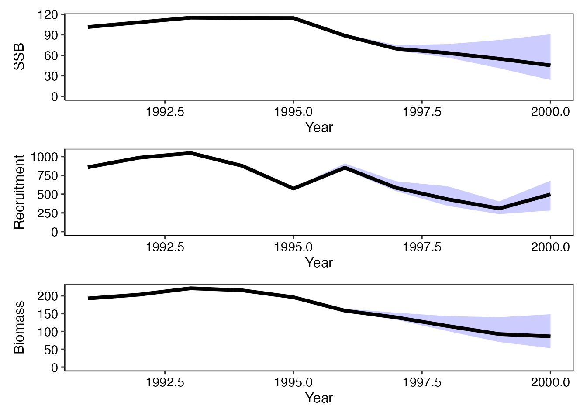
res_vpa_bootstrap$plot_rec
res_vpa_bootstrap$plot_biomass
このようにSSB、加入量、バイオマスそれぞれについて95％信頼区間とともに資源動態の作図ができます。
またブートストラップ法は資源量の信頼区間だけでなく、パラメータの信頼区間も算出出来ます。 ここでは最終年最高齢のFの信頼区間を出しています。
res_tmp <- numeric()
for(i in 1:10) res_tmp[i] <- as.numeric(res_vpa_bootstrap$res_boot[[i]]$Fc.at.age[4])
quantile(res_tmp, probs = c(0.025,0.5,0.975)) 2.5% 50% 97.5%
0.5394664 0.7136817 8.3072250 この他、各パラメータの相関関係について、ブートストラップ標本を基にプロットが得られます。
res_vpa_bootstrap$plot_cor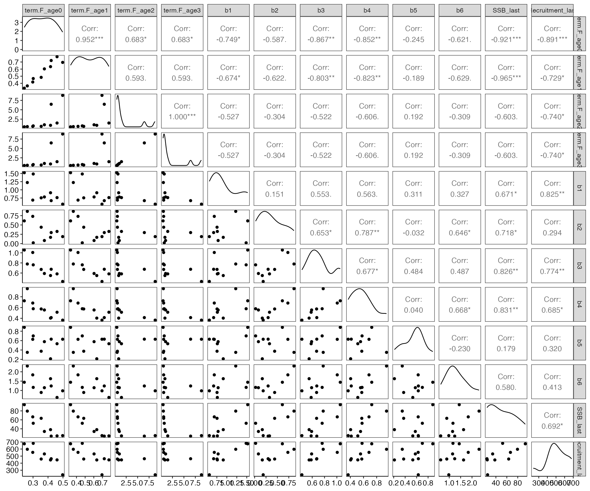
2. 年齢別漁獲尾数について乱数生成する方法
VPAは年齢別漁獲尾数（catch at age）が真であると仮定して推定するため、catch at ageの不確実性を評価することが出来ないモデルです。 ここで紹介するdo_caaboot_vpa関数は、引数として与えている年齢別漁獲尾数($input$dat$caa)の対数を取った後、正規分布乱数で生成した年齢別漁獲尾数を用いて、再度VPA計算を行います。
引数B_cvで乱数生成の変動係数を決めることができます。デフォルトで0.2となっていますが、年齢別漁獲尾数データの不確実性が大きいことが想定される場合、この値を適宜大きくして検討してみてください。
res_vpa_caaboot <- do_caaboot_vpa(res_vpa_estb, B_ite = 10)
res_vpa_caaboot$plot_ssb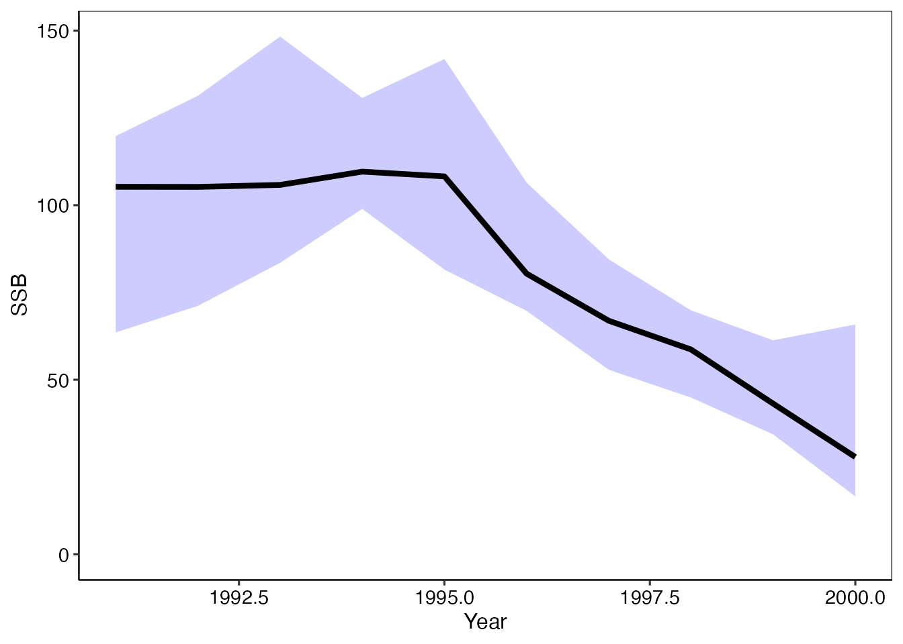
res_vpa_caaboot$plot_rec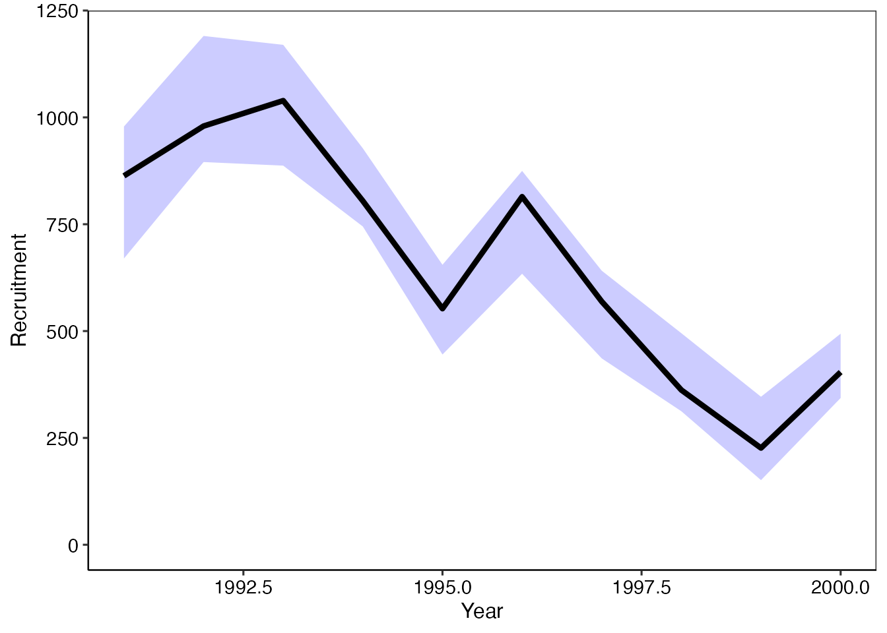
res_vpa_caaboot$plot_biomass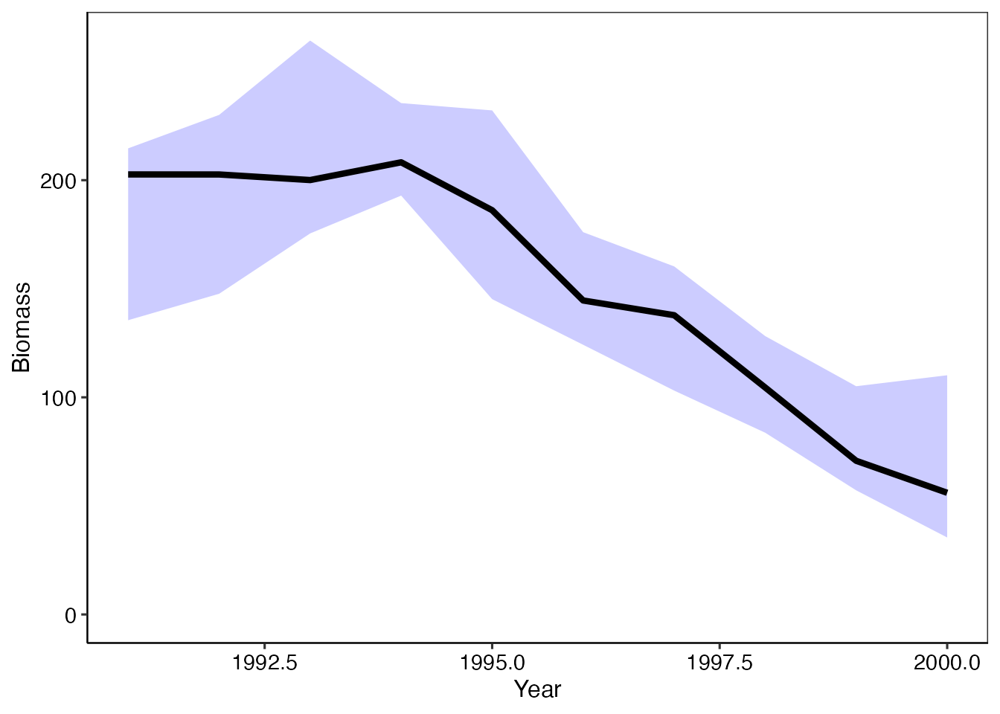
一般に、VPAの資源量推定結果を信頼区間と重ねてプロットすると、先程のres_vpa_bootstrap$plot_ssbのように最近年で信頼区間が広く、過去にさかのぼるほど信頼区間は狭くなっています。
これは決して過去の推定結果が正しいからではなく、確率変数として考えている資源量指数の不確実性を考慮しただけでは、最近の資源量の不確実性しか考慮できず、それより過去は正しいと仮定されている年齢別漁獲尾数データによって、決定的に求まっているだけなのです。 年齢別漁獲尾数の不確実性を考慮すると、時系列に関係なく資源量推定結果に不確実性があることが明らかになるかと思います。